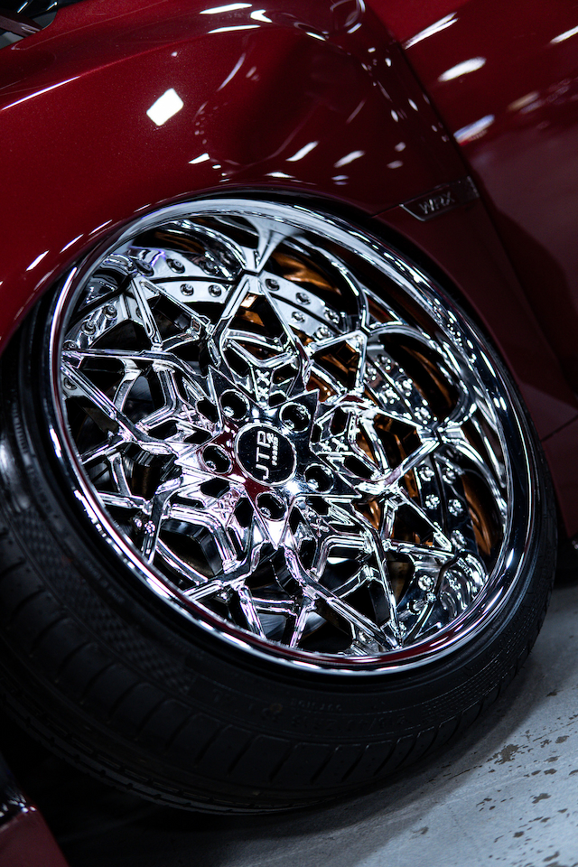
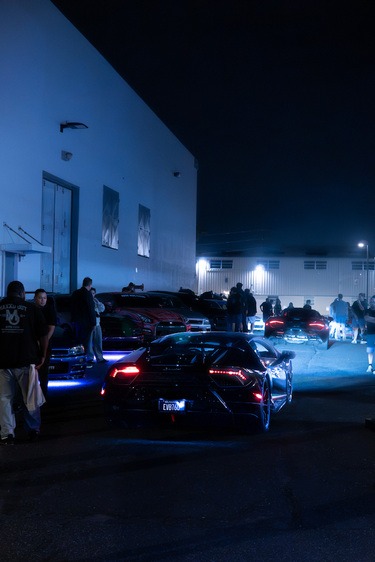
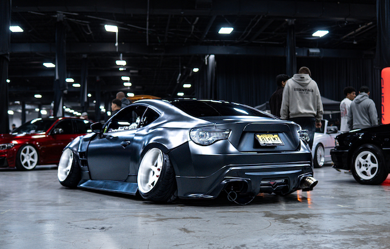

Katie Krause
Raritan, NJ
I want to be...
Graphic Designer with a background with computer programming and web development.
Outside of school...
I enjoy staying active, whether that's swimming, weightlifting, or snowboarding. I'm also a huge car enthusiast and love to learn about different makes and models. I also enjoy taking photos of the cars I see at car shows and events with my Sony a6100. Additionally, I enjoy listening to music, especially Hip Hop and Rap!
My Hobbies
- Car Photography
- Photo Editing
- Attending Car Meets
My Automotive Photography


